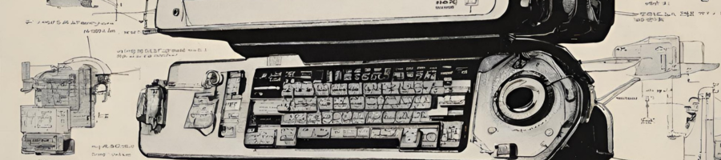
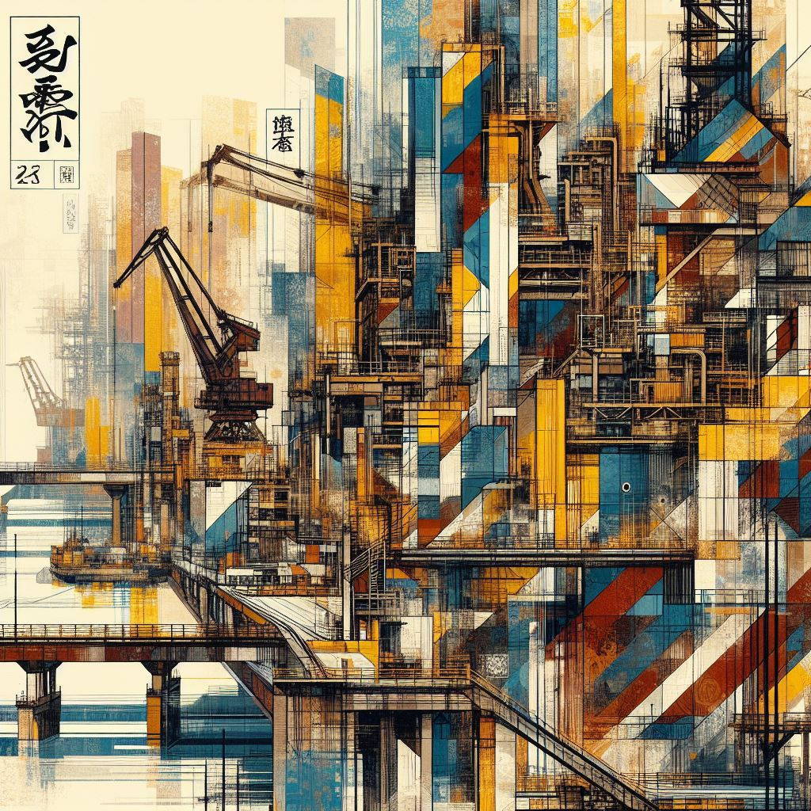

Sukara Insights
Japan is an economic powerhouse heavily involved in the world market. Visit these other tabs to discover more about Japan!


Economical Horizon
Japan boasts one of the world's largest and most advanced economies, known for its remarkable blend of traditional industries and technological innovation. As a major global player in technology, automotive manufacturing, and electronics, Japan is home to renowned multinational corporations and brands. The nation's economic strength is also supported by a robust service sector and a highly skilled workforce. Despite facing challenges such as an aging population and environmental constraints, Japan continues to be a key economic power, driving significant developments in technology and global trade.

Mordern Japan(現代日本)
Modern Japan is a vibrant tapestry of tradition and innovation, seamlessly blending ancient customs with cutting-edge advancements. Its urban landscapes, epitomized by cities like Tokyo, showcase futuristic skyscrapers alongside historic temples. The nation is a global technological hub, with companies like Sony, Toyota, and Nintendo continuing to lead the world in electronics, automotive innovation, and gaming. Japan's societal fabric reflects a delicate balance between deeply rooted cultural values and a forward-thinking mindset. The country is renowned for its efficiency, punctuality, and impeccable craftsmanship, evident in industries ranging from manufacturing to robotics.Urban Life(都会暮らし)
Urban life in Japan is a dynamic and captivating experience, characterized by a harmonious blend of modernity and tradition. Cities like Tokyo and Osaka pulsate with energy, boasting futuristic skyscrapers, bustling shopping districts, and a myriad of entertainment options. The efficiency of public transportation, exemplified by the iconic bullet trains, facilitates seamless movement within and between cities. Despite the fast-paced urban lifestyle, Japan's cities also feature serene pockets of tranquility, such as traditional gardens and historic neighborhoods. The culinary scene is a sensory delight, offering a diverse array of traditional and international cuisine.Modern Development(現代の発展)
Japan's modern development is characterized by its remarkable post-World War II recovery, transforming it into an economic powerhouse. Embracing technological advancements, Japan rapidly evolved into a global leader in innovation, particularly in electronics, automotive manufacturing, and robotics. The nation's commitment to research and development has propelled it to the forefront of cutting-edge industries. Tokyo, its capital, stands as a symbol of modernity with its iconic skyline and technological infrastructure. Despite economic stagnation in the 1990s, Japan has consistently adapted to global trends, emphasizing sustainability and embracing a digital future.Economy (経済)
Japan possesses the world's third-largest economy, distinguished by technological innovation and a robust industrial sector. Renowned corporations in automotive and electronics contribute significantly to its economic strength. The government's pivotal role in shaping policies has led to a high standard of living, advanced infrastructure, and a skilled workforce. However, Japan grapples with demographic issues, including an aging population and declining birth rate, impacting its labor force and social welfare system. Despite these challenges, Japan remains a vital player in the global economy, fostering international trade, technological advancements, and cultural exports.

Industries(産業)
Japanese industries are a dynamic tapestry, reflecting the nation's economic prowess and commitment to innovation. The automotive sector, led by giants like Toyota and Honda, has achieved global prominence for its high-quality vehicles and groundbreaking technologies. The electronics industry, with iconic companies such as Sony and Panasonic, continues to drive innovation in consumer electronics, contributing to the evolution of smart devices and cutting-edge entertainment systems. Japan's manufacturing excellence extends to precision machinery, steel, and chemicals, with companies like Mitsubishi Heavy Industries and Nippon Steel playing vital roles.Technology(テクノロジー)
Japan stands at the forefront of global technology, renowned for its pioneering contributions across various industries. The country has been a trailblazer in electronics, with iconic companies like Sony, Panasonic, and Toshiba shaping the consumer electronics landscape. Japan's automotive sector, led by companies such as Toyota and Honda, has consistently pushed the boundaries of innovation, introducing advancements in fuel efficiency and electric vehicle technology. The nation is a leader in robotics, with innovations ranging from industrial automation to humanoid robots like ASIMO. Additionally, Japan plays a significant role in the development of high-speed trains, contributing to efficient and advanced transportation systems.
3